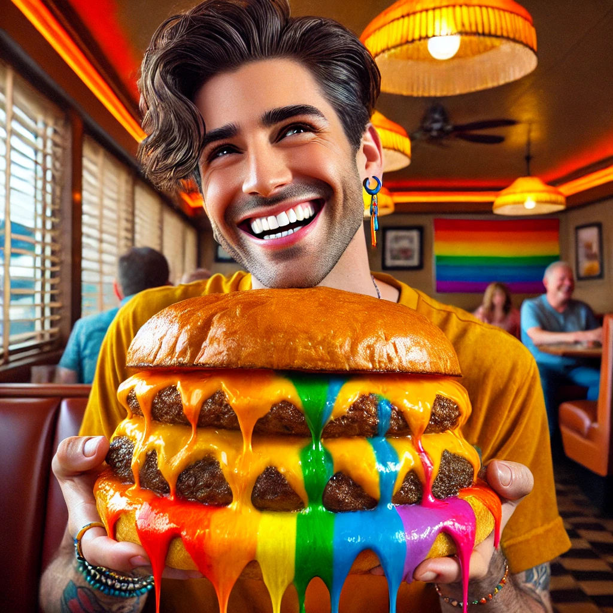
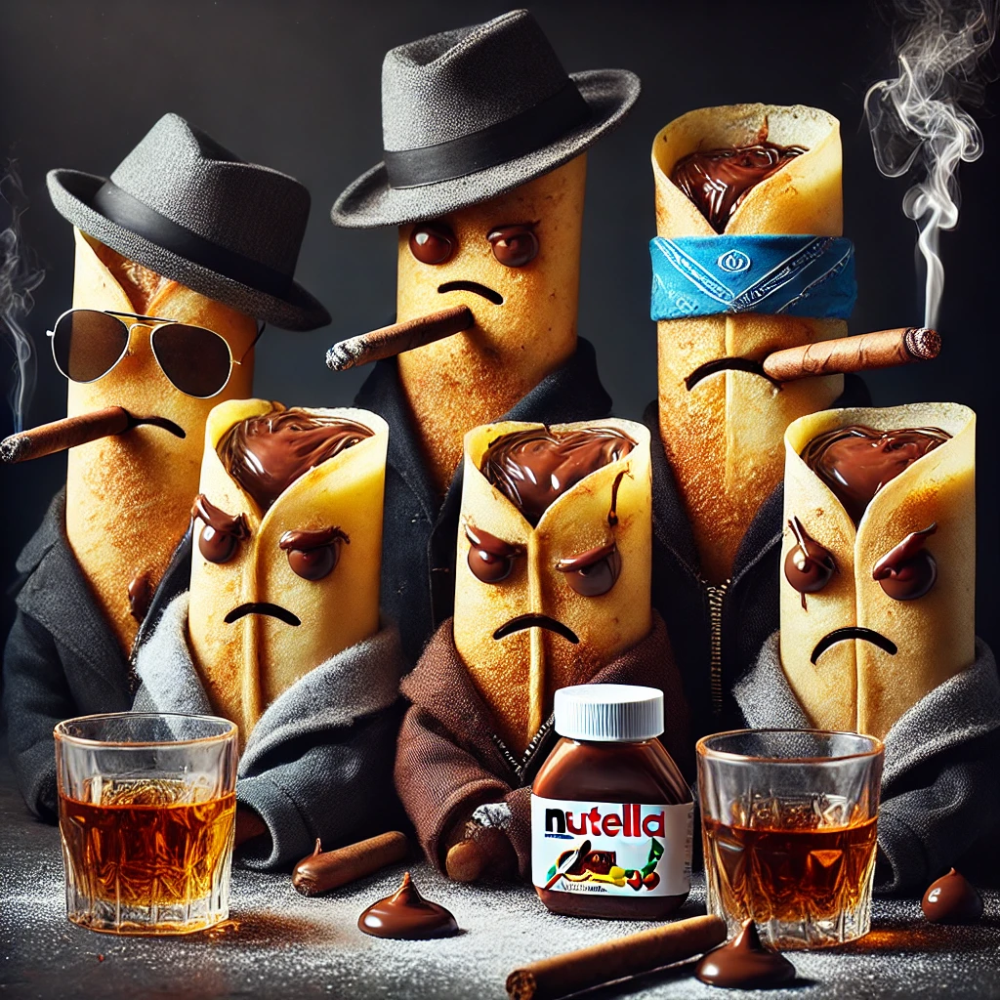

Behold the holiest of holies: a bowl so powerful that it holds the secrets of the entire universe,
and some oats. Bow before its milky grace as it blesses us with breakfasty vibes. Worship the oats,
praise the milk. Seriously, this bowl is everything you never knew you needed in your life.
It’s a bowl, but it's also... so much more. Some say it’s the reason the sun rises. We’re not
saying that, but, like, maybe?
Today's Menu
First Appetizer, WARM welcome by Juliano
A lively image of Juliano, an Austrian man with blonde hair, blue eyes, and an engaging smile, welcoming guests to an academic-themed appetizer. He is wearing a sharp suit jacket with no pants, and light blue flip-flops with cloud patterns. Juloiano is standing at the head of a beautifully set table, passionately talking about academic topics with hand gestures, while holding a small plate of appetizers. The appetizers are elegantly presented with refined ingredients, and the setting has an inviting atmosphere, full of warmth and energy, with guests attentively listening to Juliano's academic insights.

Hamburga
A bright and colorful image of the 'gay burger,' served as the second appetizer, and Juliano's personal favorite.
This burger features rainbow-colored, LGBTQ+ inclusive cheddar cheese melting over a juicy patty, accompanied by fresh lettuce,
tomato, and vibrant toppings. The burger is presented on a sleek white plate, its bold colors standing out against the elegant setting.
In this very moment, the Austrian networker,beams with pride as he shares his enthusiasm for this unique and delicious appetizer that celebrates diversity and flavor
Badass Ribs
A bold and powerful image of the 'badass ribs,' served as a hearty main dish.
These juicy, succulent ribs are drenched in smoky barbecue sauce, with a glossy, mouthwatering sheen. The ribs are arranged in a way that exudes authority, dominating the plate like an unstoppable force. Surrounding the ribs are rustic side dishes like crispy potatoes and charred vegetables, adding to the rugged presentation. The atmosphere is intense, with dramatic lighting that highlights the ribs' commanding presence, creating a sense of indulgence and strength. This is not just a dish—it's an experience, embodying the spirit of dominance and flavor.

Dolce
A fun and rebellious image of the 'Nutella Crepes Gang,' served as the final dish, a dessert with attitude. These shiny, golden-brown crepes are generously filled with rich Nutella, oozing out in smooth, glossy drips. The crepes are arranged with swagger, leaning against each other like a gang of troublemakers, surrounded by a dusting of powdered sugar and fresh berries. Each crepe has a confident stance, as if plotting their next move, while cigars and a glass of whiskey rest on the side of the plate. The atmosphere is moody yet playful, with dim lighting casting dramatic shadows, giving the dessert a tough yet irresistible charm. This is not just a sweet treat—it's a dessert with personality.